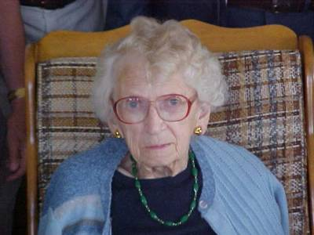
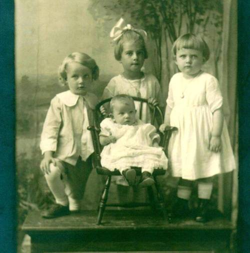
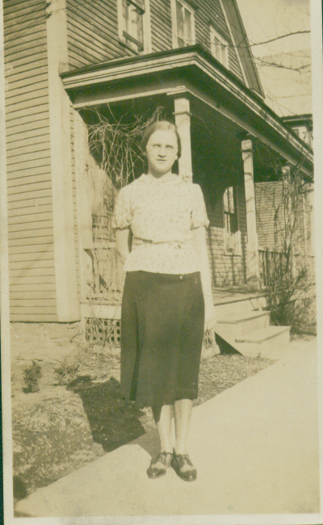

The Family Chronicle
No.33 January 20, 2003
__________
Venetia Katherine (Glendenning) Russell
May 14, 1915 – January 11, 2003

Photo of Venetia taken by Loisanne (Glendenning) Gregan at Ken and Verne’s cottage in Point Aux Carr, NB on July 27, 2002.
Venetia was born at Little Branch. Mum and Dad had purchased the property from Jessie MacDonald, where Norman now lives, had returned to Little Branch and were running the Post Office. In late 1916, they left New Brunswick for North Haven, Ct and in the next few years lived in Hampton Virginia and Muscle (Mussel) Shoals, Alabama, returning to Little Branch, I believe, in May of 1919. In Virginia, Venetia’s father was in charge of the clearing of Langley Field which, I believe, handled both sea and land based airplanes. It being a defense establishment, people needed passes to visit. A year or so ago, Venetia showed me her pass, dated as I recall, 1918.
Venetia attended the Little Branch School for Grades 1-8, the highest grade available in the Little Branch School, and then she
stayed with Aunt Tine in Loggieville where she completed Grade nine. As was the custom of the day, she wrote Entrance Exams and gained First Class Entrance to
the Provincial Normal School from which she graduated in 1933.
I believe that she taught in New Carlysle, Napan, Penniac and Bayside; she may also have taught somewhere north of Fredericton. She also taught in Point Aux Carr, Little Branch, Miramichi Rural High School and Chatham retiring in 1975. Quite a number of people at her wake mentioned that Venetia had been their teacher.
Venetia was active in her church, St. Paul’s Presbyterian. I am sure that she was also in Sunday School at St. Stephen’s Presbyterian Church prior to it becoming St. Stephen’s United Church. Venetia was President of the Young Peoples Society and the local paper, presumably the Chatham Gazette, noted, “Miss Venetia Glendenning, President Black River Y.P.S, in a very pleasing manner welcomed the delegates…” I believe that this was at a Young People’s rally prior to the official opening in 1930.
Venetia was a member of St. Paul’s since its establishment, played the organ for many years and for 40 years was Church Treasurer. She was also a member of the Women’s Missionary Society and the Women’s League.
Venetia met Cameron Russell (1906-1979) in the spring of 1932 at Little Branch. Cam was rafting logs for Harrison Murdoch and they tied up at the wharf. Cam, and perhaps other members o;f the crew came over to talk to the girls in the schoolyard. They married in St. Paul’s Presbyterian Church and lived in Point Aux Carr in a home they

Standing: Walter, Grace and Venetia; Lillian seated; taken in New Haven, Ct. probably in late1917.
bought from Mrs. Simon MacDonald. Mrs. MacDonald retained a room which she used mainly in the summer. Cam and Venetia had three children, Glenn, Leonard and Donna.
Venetia was an avid reader, a good listener and a good sport. She was a good conversationalist but not one to gossip or be critical of others. She demanded nothing, asked little and offered much. She did not complain and was always “fine” when asked about her own health. She did not want to bother people. She could entertain herself and did not mind living alone. In fact, she lived alone for 20 years after she became a widow.
Venetia was a resource for information about her community and we shared an interest in genealogy; she provided me with much of my initial information about the Watling side of the family. She could recall family relationships from memory whereas I have to rely on my notes and records.
Venetia and Cam had many trips to Florida with Ken and Verne. When lighting her stove to warm the house on return from one trip in 1989 or 1990, the house caught fire and burned. She rebuilt on the same site. Venetia and Cam visited Donna and Vernon when they lived in Vancouver and later in England and, while in England, traveled with the family by car around Europe.
As a youngster, I recall the nice table Venetia set at mealtime. A visit to Venetia’s always ended in lunch before leaving. Sometimes when visiting the Miramichi in recent years, I would drop in on Venetia’s about 8:00 am and enjoy toast, jam, tea and conversation. She kept scotch cookies in her freezer and always set some out when she knew I was coming for a visit.

Venetia taken, I believe, in 1933 when she was enrolled in the Provincial Normal School in Fredericton, NB
The Chronicle is an occasional newsletter published by Don Glendenning It is intended to solicit and provide information about family tree matters. Comments, enquiries and information may be sent to 62 Queen Elizabeth Drive, Charlottetown, PEI, C1A 3A9. Tel: 902-892-5859 Email: dglende @attglobal.net. Feel free to make and pass along copies of this newsletter.